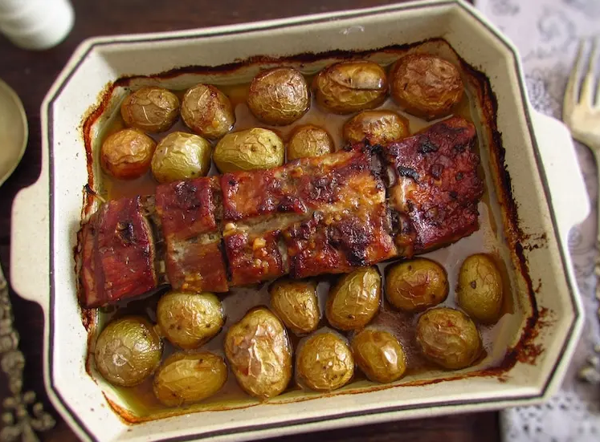

Pork ribs and potatoes recipe

Description
Roasted pork ribs recipe with honey and mustard
Ingredients
- Pork ribs
- Red skin potatoes
- Olive oil
- Chopped garlic
- Paprika
- Honey
- Mustard
- Pepper
- oregano
- Nutmeg
- Thyme
- Salt
Steps
-
Wash and peel the potatoes. Place the pork ribs and the potatoes on a baking pan and season
with salt.
-
Mix olive oil, chopped garlic, paprika, honey, mustard, pepper, nutmeg and thyme. Rub the
mix on ribs and potatoes and let it marinate for 1 hour.
- Preheat the oven to 180°C.
-
Bake until you see golden color on the ribs and the potatoes for about 90 minutes.
Occasionally, drizzle the pork ribs and the potatoes with the sauce.